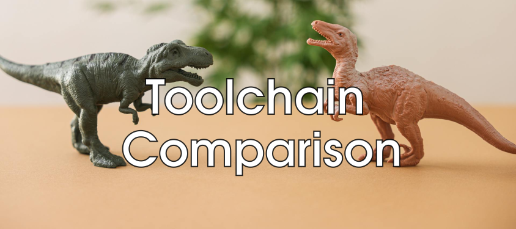

Toolchain comparison#
At some point, every project faces the challenge of selecting a tool or, as systems become more complex, an entire toolchain. Choosing a toolchain also means deciding against one or more alternatives. Unfortunately, these decisions are often based on subjective criteria rather than objective facts: personal experience, missing features, anecdotal success stories from other teams, or simply a lack of access to comprehensive information and user requirements.
This article presents a toolchain comparison spreadsheet, free of charge and open for modification and internal use. It is prefilled with tools from the docs-as-code ecosystem and, most importantly, includes over 160 user requirements collected from automotive software projects (150–1,500 users) over recent years.
Prefilled Docs-as-Code Data#
The spreadsheet already contains process roles, tools, and other criteria commonly used in Docs-as-Code projects, collected from automotive projects at international OEM and Tier-1 companies.
Earlier versions of this spreadsheet have been used in multiple projects to support decision-making during toolchain evaluations.
Requirements#
Over 160 requirements are already available, each with its associated process role, a brief task description, and an initial weighting.
Some example requirements:
As a Req. Manager, I want to create versions and baselines.
As an Architect, I want to write PlantUML diagrams in object content.
As a SW Developer, I want to test the documentation links.
As a Req. Manager, I want to have freely configurable object types.
As a Process Eng., I want to define the rules for requirement IDs.
As a DevOps, I want to build HTML and export data to files during one build.
As a Req. Manager, I want to integrate or copy IBM Doors issues as objects into my docs.
As a Project Lead, I want to find triggers for performance problems (bottlenecks).
The full list of requirements can be found in the sheet.
Configuration#
Prefilled process roles include:
DevOps
Manager
Process Eng.
Project Lead
Quality Eng.
Req. Manager
SW Architect
SW Developer
SW Tester
System Eng.
Available (but extendable) tools are:
AsciiDoc - https://asciidoc.org/
Docker - https://docs.docker.com/
Doxygen - https://www.doxygen.nl/manual/
Git - https://git-scm.com/doc
GitHub - https://docs.github.com/
Jupyter - https://docs.jupyter.org/
Open-Needs IDE
SNE
Sphinx - https://www.sphinx-doc.org/
Sphinx-Needs - https://sphinx-needs.readthedocs.io/
Sphinx-PlantUML - https://sphinxcontrib-plantuml.readthedocs.io/
Sphinx-Preview
Sphinx-Test-Reports - https://sphinx-test-reports.readthedocs.io/
VS Code RST Preview - https://marketplace.visualstudio.com/items?itemName=lextudio.restructuredtext
ubTrace - https://useblocks.com/products/ubtrace
ubc - https://useblocks.com/
ubConnect - https://useblocks.com/
The list of all requirments can be seen in the sheet.
How to use the sheet#
The process of filling out the Toolchain Comparison spreadsheet is divided into two parts, which are often handled by different people depending on their expertise and project involvement.
The Requirements sheet gathers all requirements and should be completed collaboratively. For example, a System Architect will have different needs than a Software Developer, and Safety Engineers or Project Leads will have their own priorities.
The subsequent Comparison sheet should be filled out by the responsible toolchain owners, who have already evaluated or tested the tools. It is important that the fulfillment of a requirement is based on the current capabilities of the toolchain, not on promised future features. If a feature is missing in Toolchain A and is planned for the future, remember that Toolchain B’s developers can also use that time to close their own gaps. Relying on future promises leads to ambiguous results and does not help solve present problems.
Requirements sheet#

In this sheet, requirements are collected and weighted.
Requirements are written like user stories, with process role and process task specified in separate columns. Example: As a Process Engineer, I want to link internal objects.
Each requirement can be assigned a topic to help with sorting and filtering.
Next, the project benefit needs to be defined. For this, Points from 1–5 can be given, where 1 means nice-to-have and 5 is a must-have or even a show stopper.
This is followed by a Factor: 5–100%. The factor allows you to indicate the real benefit of a feature. For example, a feature saving 60 minutes per week for 2 project managers may be less important than a feature saving 10 minutes for 200 developers. 120 minutes vs. 2,000 minutes in total project time saved.
Points and Factor are highly project-specific and should be reviewed by the process team to avoid biased weights, as people tend to rate their own tasks higher than those of other project roles.
At the end, a final Result for the requirement is calculated: Simply Points multiplied by the Factor. This represents the real value of the requirement for the specific project.
Finally, a benefit category can be set to indicate why this requirement is important—for example, to speed up development or to improve the final product quality.
Hint
Do not start from scratch!
Most projects share almost the same set of requirements. They may differ by about 10%, and the weighting is usually project-specific.
The more than 160 requirements already included will help you get started quickly and enable you to build a solid decision matrix in less time.
Comparison sheet#
{kind=link}
The reuqirements are automatically moved over to the Comparsion sheet and are not allowed to be changed.
For both Toolchains, an entry shall be given in the Support column if a requirement is fullfilled by 100%, 50% or 0%.
100% means the requirment is fully fullfilled. 0% is for unfullfilled requirements. And 50% is for rare cases, where workarounds may be available, which allow to reach the goal of the requirment maybe with some extra work.
The Points column contains the finally reached points for a requirement: Points from the Requirement sheet multiplied with the Support value.
You can further specify the information by assigning the related tool for each requirement.
The final result—the total points achieved—can be seen in row 3, where the points reached are compared to the overall possible points.
Analysis sheet#
{kind=link}
The Analysis sheet provides insights into the main benefits each tool offers.
Does a tool help you speed up development, or is it more valuable for providing data insights?
This view helps you assess how important a specific tool is for your process and the expected improvements it brings to the toolchain.
Other sheets#
Additional sheets included:
Overview: The welcome page of the spreadsheet.
Help: Instructions and tips for using the spreadsheet.
Config: Configuration options for drop-downs and related settings.
License: The license information for the spreadsheet.
Motivation#
The motivation for creating and sharing this sheet is that most tool decisions are made behind closed doors, often by a small group of people who do not fully represent the real project situation. Frequently, these decisions are driven by a single tool vendor or team with preferred access, who may define and even hide requirements to gain an advantage.
While this toolchain comparison cannot eliminate discussions based on politics or budget, it does provide a transparent way to evaluate supported features against a comprehensive list of project-specific requirements.
In the end, such a list also helps to revisit and justify past decisions in the future.
Contribution#
The list of requirements and tools can never be fully complete. I welcome any additional requirements or suggestions that could help extend the current list.
You can contribute by sharing your own filled toolchain comparison spreadsheet—either publicly or by sending it to me via email.
Smaller feedback can also be provided by writing comments directly in the spreadsheet, but please note that these comments are visible to everyone.
Comments
comments powered by Disqus